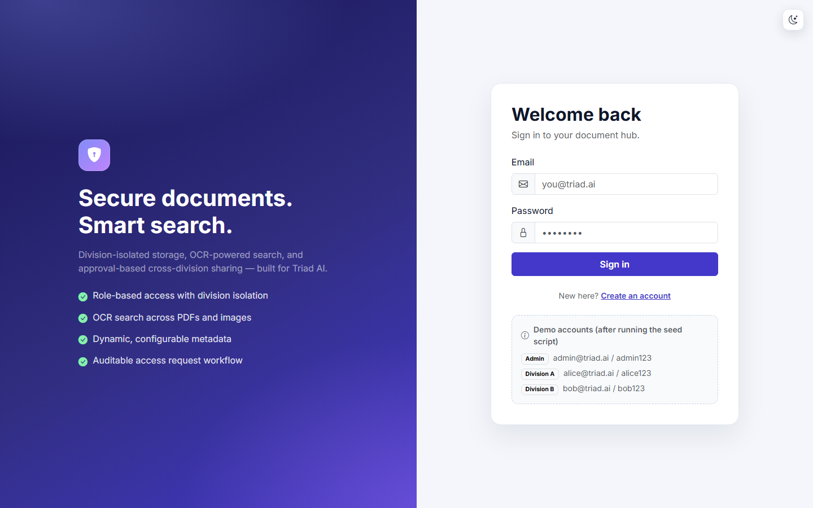
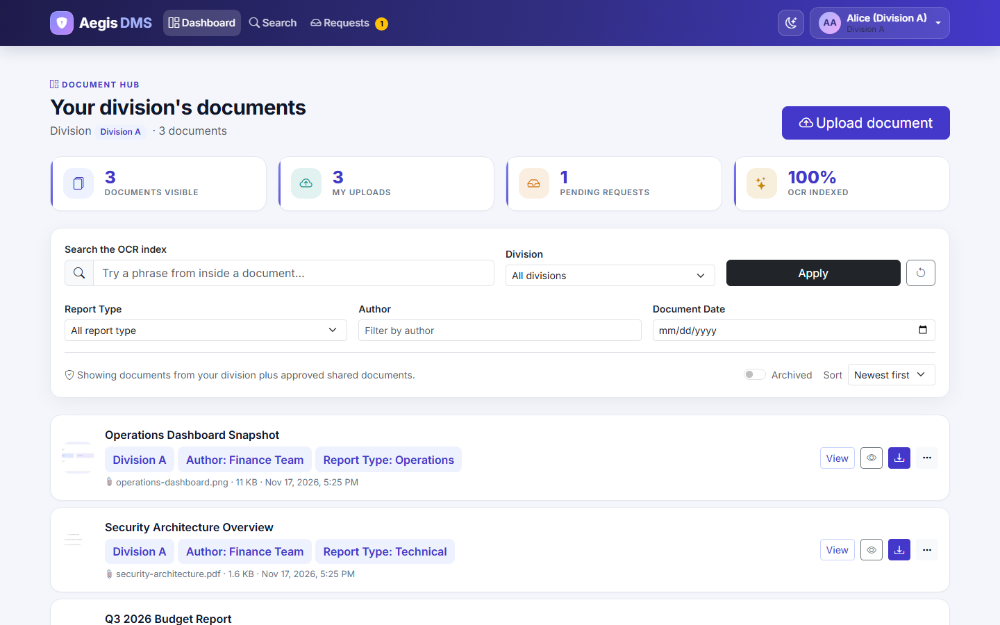
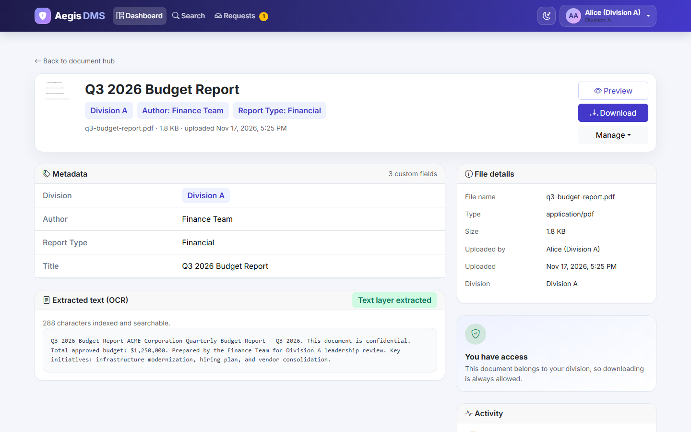
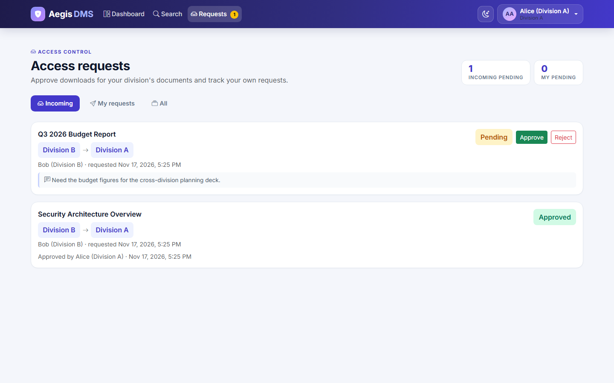
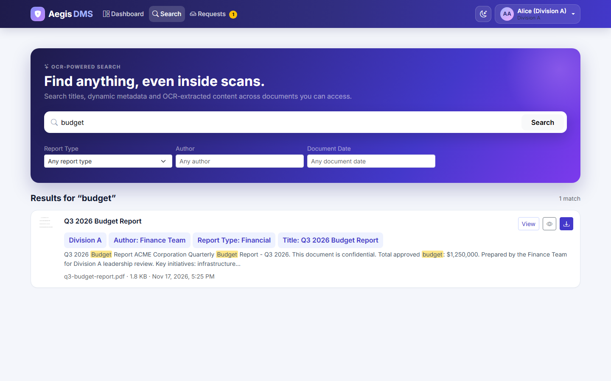
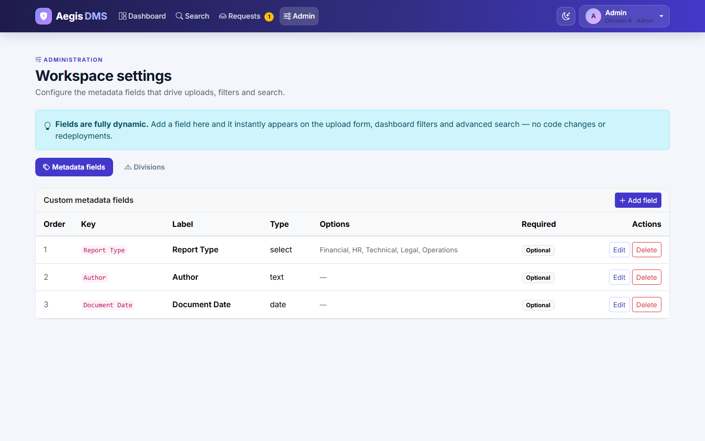
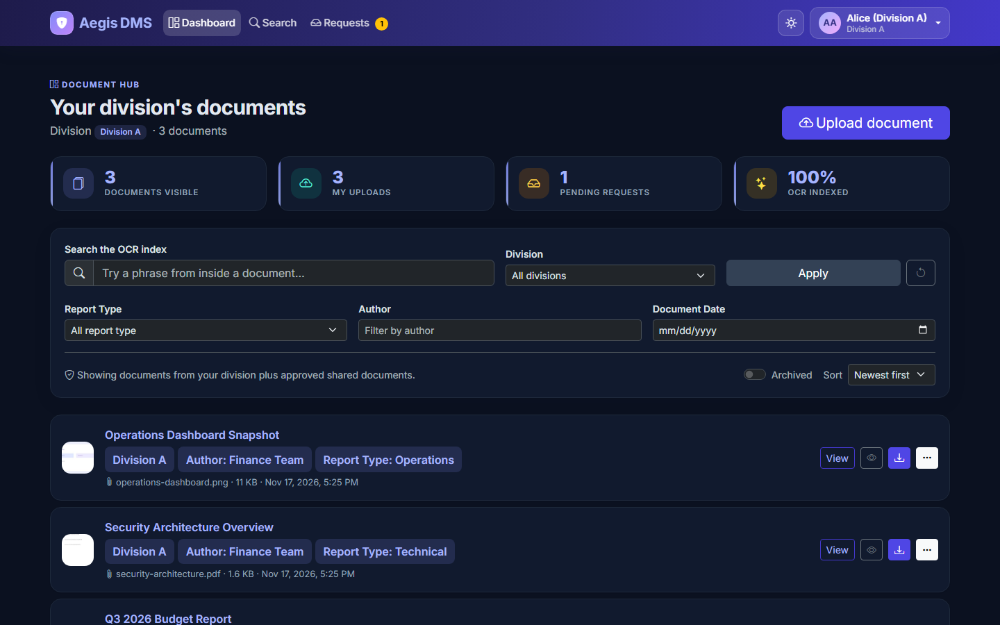

| Backend | Flask application factory, three blueprints (auth, api, views) |
| Database | MongoDB 7; document binaries in GridFS bucket documents |
| API surface | 22 JSON endpoints, all permission-checked server-side |
| UI views | Login/Register · Dashboard · Document Details · Requests · Search · Admin Settings |
| OCR | pypdf text layer → PyMuPDF render + Tesseract fallback; per-document status |
| Automated tests | 10 pytest integration tests + the provided test_api.py smoke test |
| Deployment | Local Python or Docker Compose (MongoDB + gunicorn + Tesseract) |
Organisations rarely store documents in one place. Reports, contracts and scanned records sit in shared folders with little structure, no audit trail, and no reliable way to keep one department's material away from another's. Aegis DMS addresses that with a small, well-structured document hub built around three ideas:
The application is deliberately dependency-light on the front end: Jinja templates render page shells, and a set of vanilla JavaScript modules talk to the REST API. There is no build step, which keeps the project easy to run and review.
The repository contains the Flask application, the MongoDB schema and seed logic, the OCR pipeline, the responsive front end, a pytest integration suite, the assignment-provided smoke test, Docker packaging, and this report. It is a single self-contained submission.
The brief asks for a document management system with dynamic metadata, strict division isolation, a cross-division request flow, OCR search, a REST API and six views. Each requirement maps to concrete code, not a mock-up:
| Requirement | Implementation |
|---|---|
| Upload documents with custom metadata | POST /api/documents/upload accepts multipart file plus a JSON
metadata object; the record is written to MongoDB and the binary to GridFS in one request. |
List documents filtered by metadata (e.g. ?Report Type=Financial) |
GET /api/documents treats any query parameter that matches a configured metadata key
as a metadata.<Key> filter, alongside division, archive, sort and pagination parameters. |
| Download documents | GET /api/documents/<id>/download streams from GridFS with a permission check —
uploader, owning division, or approved requester. |
| Request access to another division's document | POST /api/access/request creates a pending request; the owning division approves or
rejects via /api/access/approve and /api/access/reject. |
| Search documents | GET /api/search searches titles, metadata values and OCR text across the
caller's accessible set, returning highlighted snippets. |
| Dynamic metadata fields | Fields live in the metadata_fields collection and are managed from Admin Settings.
Upload, filters and search resolve fields dynamically. |
| Role-based access control | JWT authentication, division membership, admin-only endpoints, and ownership rules enforced in
app/utils.py and applied to every document route. |
| Database for metadata and file storage | MongoDB collections for users, divisions, fields, documents and requests; GridFS for binaries and thumbnails. |
| Six UI views | Authentication, Dashboard, Document Details, Access Requests, Advanced Search, Admin Settings. |
| Docker (optional) | Dockerfile + docker-compose.yml run MongoDB and the app (with Tesseract installed) together. |
| Starter test must pass | The supplied test_api.py uploads anonymously; upload auth is optional by default
(REQUIRE_AUTH_FOR_UPLOAD=false) while every read endpoint still requires a token. |
test_api.py reports 1/1 passed, the pytest suite reports 10/10 passed, and the Docker stack
was used to capture the screenshots in this report.
Aegis follows a conventional three-tier shape. The browser holds no business logic beyond rendering: every permission decision happens on the server, and every data access goes through the API.
┌──────────────────────────── Browser ────────────────────────────┐
│ Jinja page shells + static/js modules (api, dashboard, │
│ document, search, requests, admin, theme, common) │
│ localStorage: JWT · theme preference │
└───────────────┬──────────────────────────────────────────────────┘
│ fetch() · Authorization: Bearer <jwt>
┌───────────────▼──────────────────────────────────────────────────┐
│ Flask application │
│ auth_bp /api/auth/* views_bp / (page shells) │
│ api_bp /api/documents, /api/access, /api/search, │
│ /api/metadata-fields, /api/divisions, /api/stats │
│ utils.py RBAC helpers · serializers · pagination │
│ ocr.py text layer → render → Tesseract · thumbnails │
└───────────────┬──────────────────────────────────────────────────┘
│ PyMongo
┌───────────────▼──────────────────────────────────────────────────┐
│ MongoDB 7 │
│ users · divisions · metadata_fields · documents · access_requests│
│ GridFS bucket "documents" (files + thumbnails) │
└──────────────────────────────────────────────────────────────────┘
Authorization: Bearer <token> to each API call.has_download_access, can_manage, request_status).MONGO_URI differs (localhost vs the mongo service name).| Module | Responsibility |
|---|---|
app/__init__.py | Application factory, blueprint registration, JSON error handlers, startup defaults. |
app/config.py | Environment-driven configuration: Mongo URI, secrets, upload size, OCR limits. |
app/db.py | MongoClient and GridFSBucket wiring, one bucket named documents. |
app/models.py | Collection names, indexes, default divisions and metadata fields. |
app/auth.py | Register, login, profile, JWT creation and request-time user resolution. |
app/routes.py | Document CRUD, upload, download, archive, delete, access requests, search, stats, metadata and divisions. |
app/utils.py | accessible_filter, has_download_access, can_manage_document, serializers, pagination, auth decorators. |
app/ocr.py | Text-layer extraction, Tesseract fallback, thumbnail generation, Tesseract discovery. |
app/seed.py | Idempotent demo users for local review. |
app/views.py | Six server-rendered page routes. |
app/static/js/ | API client plus one module per view; shared theme and UI helpers. |
Five collections hold the system state. Indexes are created at startup and are safe to re-run.
| Field | Type / notes |
|---|---|
_id | ObjectId |
name | Display name |
email | Unique index; used as the login identifier |
password_hash | Werkzeug PBKDF2 hash — plaintext is never stored |
division | Division name; the basis of isolation |
role | user or admin |
created_at | UTC timestamp |
| Field | Type / notes |
|---|---|
_id | ObjectId |
title, filename | Human title and original file name |
description | Optional free-text note |
division | Owning division (from the uploader) |
uploaded_by / uploader_name | Owner identity; drives manage rights |
gridfs_id | GridFS file id of the original binary |
content_type, size | MIME type and byte size |
metadata | Sub-document of dynamic fields, e.g. {"Report Type": "Financial"} |
ocr_text, ocr_status, ocr_engine | Extracted text and how it was produced |
thumbnail | Small JPEG preview of the first PDF page or image, returned inline as a data URL |
activity | Audit timeline: uploaded, requested, approved, rejected, downloaded, archived, restored |
archived | Boolean; archived documents are hidden unless explicitly requested |
created_at, updated_at | UTC timestamps |
| Field | Type / notes |
|---|---|
doc_id | Target document |
requester_id, requester_name, requester_division | Who asked |
owner_division | Division that must decide — powers the inbox index |
status | pending · approved · rejected |
decided_by, decided_at | Decision audit |
created_at, updated_at | UTC timestamps |
metadata_fields stores key (unique, immutable), label,
type (text, select, date, number),
options, required and order. divisions is a simple
unique list of division names. Both are seeded on first start and thereafter managed by admins.
users.email unique · divisions.name unique · metadata_fields.key uniquedocuments(division, created_at desc) for dashboard browsing; documents.uploaded_by for "my uploads"access_requests(doc_id, requester_id, status) for duplicate detection;
(owner_division, status) for the inbox; (requester_id, created_at desc) for the outbox| Role | Capabilities |
|---|---|
user | Sign in; upload into own division; browse and download own-division documents and approved shared documents; request cross-division access; manage (archive/delete) documents they uploaded. |
admin | Everything a user can do, plus: manage metadata fields and divisions; archive or delete any document in their division; approve or reject requests that target their division. |
Admin status is granted at registration when the email appears in ADMIN_EMAILS (default admin@triad.ai).
division equals
the caller's division, or documents for which the caller holds an approved request.403.
Requester (Division B) Owner (Division A)
───────────────────── ──────────────────
1. Finds the document via share link
or search result
2. POST /api/access/request ─────────► 3. Request appears in the
status = pending division's inbox
4. Approve or reject
6. Document now visible, ◄────── (POST /api/access/approve
downloadable and searchable or /api/access/reject)
for this requester
owner_division; the requester cannot decide their own request.400 — it is already visible.test_division_isolation, test_access_request_approval_workflow and
test_rejection_and_reapply.
Traditional DMS designs hard-code columns such as department or report type. Aegis instead treats metadata as data. Each field definition has a stable key, a label, an input type and, for select fields, a set of options. The application never imports a field list; it reads the collection whenever it needs one.
POST/PUT/DELETE /api/metadata-fields). The key is immutable once created, so stored values
never lose their meaning.metadata sub-document.metadata.<Key> equality filter. The assignment's example,
?Report%20Type=Financial, works exactly this way.| Key | Type | Options | Required |
|---|---|---|---|
| Report Type | select | Financial, HR, Technical, Legal, Operations | No |
| Author | text | — | No |
| Document Date | date | — | No |
test_admin_metadata_fields_lifecycle_and_dynamic_filtering
creates a field through the API, uploads a document using it, filters the list by that field, and deletes
the field — proving the pipeline is genuinely dynamic rather than seeded.
Search is only as good as the text it can see. Aegis extracts text at upload time and stores it with the document, so search stays fast and does not depend on re-rendering files.
.txt files are read directly.OCR_MAX_PAGES.ocr_status
(extracted, ocr, empty, unavailable,
failed, skipped) and the engine used, so the UI can explain the outcome.Tesseract discovery is defensive: the app checks TESSERACT_CMD, then PATH,
then the standard Windows install locations. If Tesseract is absent, uploads still succeed and are marked
unavailable rather than failing.
At upload, the first page of a PDF or the image itself is downscaled with Pillow into a small JPEG and stored on the document record. The API returns it inline as a data URL, so dashboard tiles render without extra requests. Clicking a document opens an in-app modal that fetches the original as an authenticated blob. No document is ever exposed through a public URL.
| Source | Example match |
|---|---|
| Title and description | “Q3 Financial Summary” |
| Metadata values | Report Type = Financial, Author = Alice |
| OCR text | A phrase inside a scanned invoice or signed contract |
Results include a highlighted snippet around the match, so users can judge relevance before opening the document. The search is scoped by the same access rules as the dashboard: you can only find what you are allowed to see.
ocr_status: "ocr", and a phrase visible only
in the scanned image was found by search. The related test is test_ocr_search_and_metadata_search.
The UI uses Bootstrap 5 as a layout and component base, then applies a custom design system: a deep indigo brand palette, soft surfaces, CSS variables for theming, and skeleton loaders for asynchronous panels. All six views fit a standard desktop browser at 100% zoom with no horizontal overflow; layouts were checked at 1366, 1440 and 1920 px, and collapse cleanly on mobile.







can_manage flag is true — and re-checked server-side.Colour, surface and border values are defined once as CSS variables, with a parallel set for the dark theme. Components — cards, tables, pills, badges, modals and inputs — consume those variables rather than hard-coded colours, which is why dark mode needed no per-page work. Bootstrap supplies behaviour and grid, while the custom layer sets the visual identity: deep indigo accents, soft elevated surfaces, compact tables, and consistent spacing at 4/8/16 px increments. Skeleton shimmer placeholders cover the dashboard and requests panels while data loads, so the layout does not jump between empty and populated states.
Accessibility was considered in the palette: text/background pairs keep sufficient contrast in both themes, status badges combine colour with labels (Pending, Approved, Rejected, Archived), and actions are real buttons rather than colour-only indicators.
All JSON endpoints live under /api. Authenticated endpoints expect
Authorization: Bearer <token>. Errors use consistent JSON bodies with meaningful
HTTP status codes (400, 401, 403, 404, 413).
| Method and path | Purpose |
|---|---|
POST /api/auth/register | {name, email, password, division} → 201 with token and user |
POST /api/auth/login | {email, password} → 200 with token and user |
GET /api/auth/me | Current user profile |
| Method and path | Purpose |
|---|---|
POST /api/documents/upload | Multipart file + JSON metadata. Division from the user, or from metadata.Division when anonymous. Returns 201. |
GET /api/documents | Division-scoped list with dynamic metadata filters, division, archived, include_archived, sort, order, page, per_page. |
GET /api/documents/<id> | Details incl. has_download_access, request_status, ocr_excerpt, thumbnail, activity, archived, can_manage. |
GET /api/documents/<id>/download | Streams the file from GridFS; 403 without permission. |
POST /api/documents/<id>/archive | {archived: true|false} — uploader or admin; returns the updated document. |
DELETE /api/documents/<id> | Uploader or admin; removes the GridFS file, record and related access requests. |
GET /api/stats | Dashboard counters: visible documents, my uploads, OCR indexed, OCR coverage, pending incoming/outgoing. |
| Method and path | Purpose |
|---|---|
POST /api/access/request | {doc_id} — creates or returns the existing request. |
POST /api/access/approve | {request_id} — owning division only. |
POST /api/access/reject | {request_id} — owning division only. |
GET /api/access/requests | ?type=incoming|outgoing|all, with pending counts. |
| Method and path | Purpose |
|---|---|
GET /api/search?q= | Searches title, metadata and OCR text across accessible documents; returns highlighted snippets. |
GET /api/metadata-fields | List dynamic fields in display order. |
POST /api/metadata-fields | Admin: create {key, label, type, options, required, order}. |
PUT /api/metadata-fields/<id> | Admin: update — the key is immutable. |
DELETE /api/metadata-fields/<id> | Admin: delete a field definition. |
GET /api/divisions | List divisions (public, used by registration). |
POST /api/divisions | Admin: create a division. |
GET /api/health | Application and database health. |
GET /api/documents?Report%20Type=Financial&sort=created_at&order=desc&page=1&per_page=12
— the first parameter is resolved against the live metadata registry.
docker compose up --build
This starts MongoDB 7, seeds the demo accounts, and serves the application at
http://localhost:5000. The image installs Tesseract, so scanned documents are OCR'd inside
the container. Stop with Ctrl+C, or run detached with docker compose up -d --build.
Prerequisites: Python 3.11+, MongoDB on localhost:27017, and Tesseract for scanned files.
python -m venv .venv .venv\Scripts\activate # Windows pip install -r requirements-dev.txt python -m app.seed # optional demo users python run.py
Open http://localhost:5000. Configuration is environment-driven; copy
.env.example to .env to override defaults such as MONGO_URI,
JWT_SECRET, MAX_CONTENT_MB or TESSERACT_CMD.
Install with winget install UB-Mannheim.TesseractOCR, or download the UB Mannheim build.
The app auto-detects C:\Program Files\Tesseract-OCR\tesseract.exe; otherwise set
TESSERACT_CMD in .env. Restart the app after installing.
| Password | Division | Role | |
|---|---|---|---|
admin@triad.ai | admin123 | Division A | admin |
alice@triad.ai | alice123 | Division A | user |
bob@triad.ai | bob123 | Division B | user |
New registrations default to the user role; emails in ADMIN_EMAILS register as admin.
| Variable | Default | Purpose |
|---|---|---|
MONGO_URI | mongodb://localhost:27017 | MongoDB connection |
MONGO_DB | triad_dms | Database name |
JWT_EXPIRES_HOURS | 24 | Token lifetime |
MAX_CONTENT_MB | 25 | Upload size limit |
REQUIRE_AUTH_FOR_UPLOAD | false | Starter-test compatibility |
OCR_ENABLED / OCR_MAX_PAGES | true / 15 | OCR toggle and page cap |
TESSERACT_CMD | auto-detected | Explicit Tesseract path |
SEED_DEFAULTS | true | Seed divisions and metadata fields at startup |
| Symptom | Fix |
|---|---|
ServerSelectionTimeoutError | MongoDB is not running; start it or use Docker Compose. |
OCR status unavailable | Install Tesseract, set TESSERACT_CMD, restart. |
| Port 5000 in use | Stop the other process or choose another port. |
Upload returns 413 | File exceeds MAX_CONTENT_MB. |
| Docker credential helper error | Add Docker's resources\bin to PATH and reopen the terminal. |
Testing is split between an integration suite that exercises the real HTTP API against a temporary MongoDB database, and the assignment's own smoke test.
| Test | Covers |
|---|---|
test_register_login_and_me | Registration, duplicate handling, login, profile via JWT |
test_anonymous_upload_compatibility_and_auth_required_for_reading | Starter-test upload path; unauthenticated reads rejected |
test_division_isolation | Divisions cannot see or download each other's documents |
test_metadata_storage_and_filters | Dynamic metadata persisted and used as list filters |
test_ocr_search_and_metadata_search | OCR text and metadata both searchable, snippets returned |
test_access_request_approval_workflow | Request → approve → visibility and download for requester |
test_rejection_and_reapply | Rejection stays closed; a new request can be filed |
test_admin_metadata_fields_lifecycle_and_dynamic_filtering | Create → use → filter → delete a metadata field |
test_admin_can_add_divisions_and_register_into_them | Division management and registration into a new division |
test_health_endpoint | App and database health reporting |
python -m pytest tests -q # 10 passed
python test_api.py # Summary written to test_report.txt # Total Endpoints Tested: 1 · Passed: 1 · Failed: 0
ocr_status became ocr and its text was searchable.| Concern | Approach |
|---|---|
| Passwords | Hashed with Werkzeug's PBKDF2 implementation; plaintext never stored or logged. |
| Sessions | Stateless HS256 JWTs with an expiry; the secret is configuration, not code. |
| Authorization | Central helpers in utils.py; every endpoint re-checks access rather than trusting client state. |
| Document confidentiality | Downloads and thumbnails stream through authenticated endpoints; there are no public file URLs. |
| Upload constraints | Size limit, required file part, server-derived division for authenticated users. |
| Duplicate and self-approval | Duplicates are deduplicated; requesters cannot approve their own request; requests within the owner division are rejected. |
| Auditability | Every sensitive action is appended to the document timeline. |
| Injection | Queries are built from typed Python values through PyMongo; metadata keys are validated against the registry. |
The defaults are tuned for local review. For production: set strong SECRET_KEY and
JWT_SECRET values, enable REQUIRE_AUTH_FOR_UPLOAD=true, terminate TLS in front of
gunicorn, restrict MongoDB network access, and move tokens from localStorage to HttpOnly
cookies if cross-site scripting is a concern. These are documented rather than silently assumed.
The assignment defined a minimum feature set. Several additional capabilities were added because they materially improve the system rather than just widening the surface:
| Enhancement | Why it matters |
|---|---|
| Private previews and thumbnails | Reviewing a document no longer requires downloading it; previews remain permission-checked. |
| Activity timeline | Turns every document into an auditable record of who uploaded, requested, downloaded or changed it. |
| Archive, restore and delete | Lifecycle management without losing the audit trail; archived items are hidden by default. |
| Dashboard statistics | Immediate visibility into document count, personal uploads, OCR coverage and pending requests. |
| Dark mode | Persisted theme with complete component coverage — not just an inverted page background. |
| Multi-file upload | Batch classification with one metadata set, reducing repetitive work. |
| Skeleton loaders and toasts | Clear feedback during asynchronous calls, with nothing jumping on completion. |
| Docker packaging | Reviewers can run the whole stack, including OCR, with one command. |
| Health endpoint | Makes deployment checks and monitoring trivial. |
| Responsive layout | Usable at laptop widths and on phones without zooming out. |
These additions are deliberately cohesive: thumbnails feed previews, previews feed the timeline, the timeline feeds the details view, and the stats endpoint summarizes the same access rules as the list. None of them weaken the core authorization model.
localStorage for simplicity;
HttpOnly cookies with CSRF protection are preferable for a public deployment.Aegis DMS meets the assignment's functional requirements and goes further in the areas that matter for real use: permissions are enforced consistently, metadata is genuinely dynamic, scanned documents are searchable, and every sensitive action leaves a trace. The result is a compact codebase — roughly 4,200 lines across backend, front end, styles and tests — that is easy to run, review and extend.
docs/screenshots/; this report is included as Aegis-DMS-Project-Report.pdf;
the passing starter test summary is in test_report.txt.